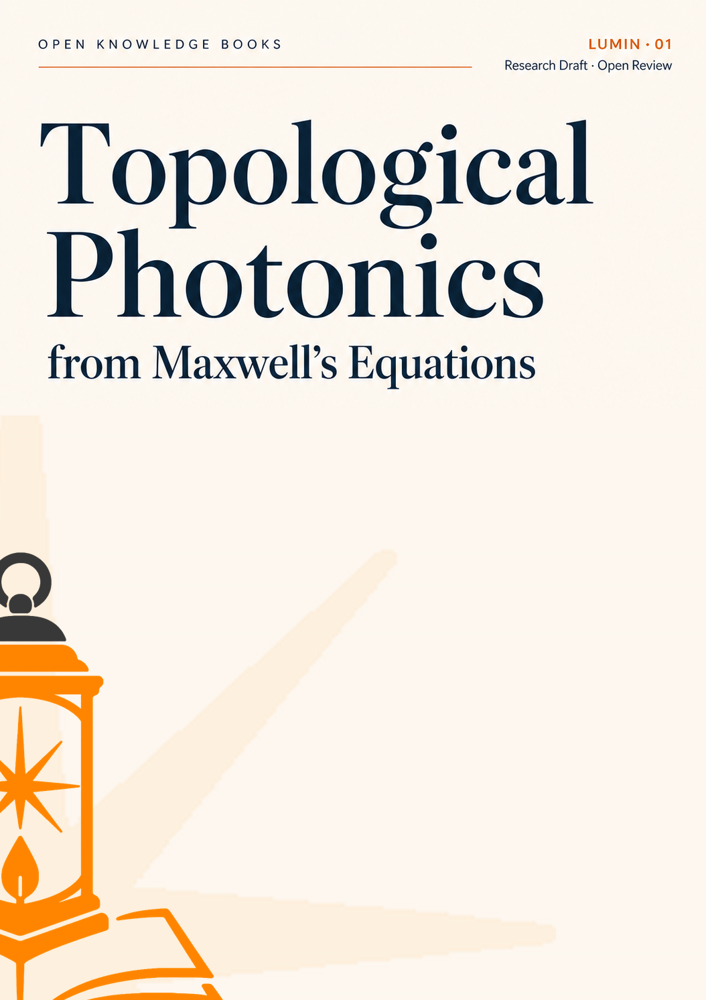

01
拓扑光子学Topological Photonics

Topological Photonics from Maxwell's Equations
从 Maxwell 方程出发组织拓扑光子学的基础框架，覆盖光子能带、Berry 曲率、Chern 数、边界态和体边对应。书稿强调物理假设、数学结构和可复核推导之间的关系。 A Maxwell-equation-first account of topological photonics, covering photonic bands, Berry curvature, Chern numbers, edge states, and bulk-boundary correspondence while emphasizing physical assumptions, mathematical structure, and verifiable derivations.